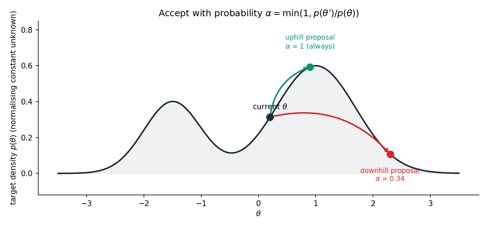
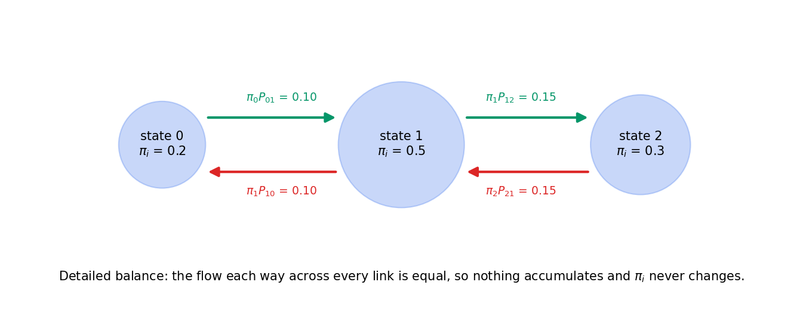
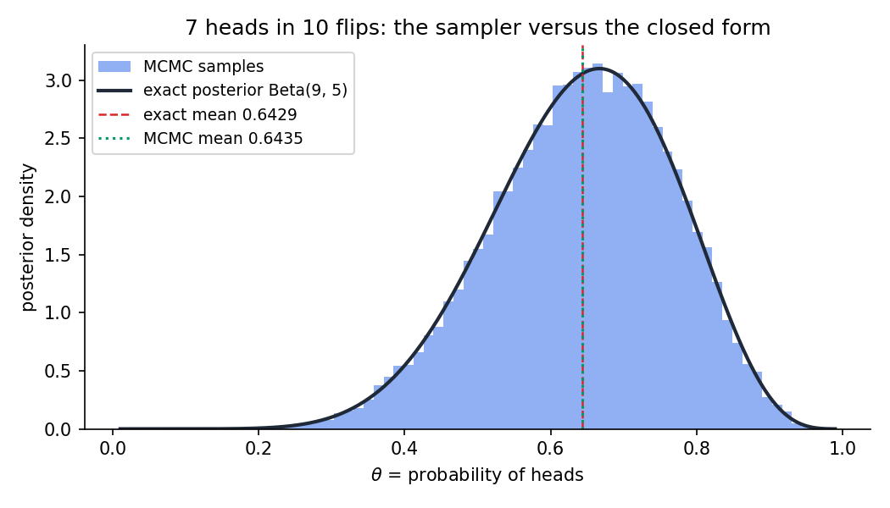
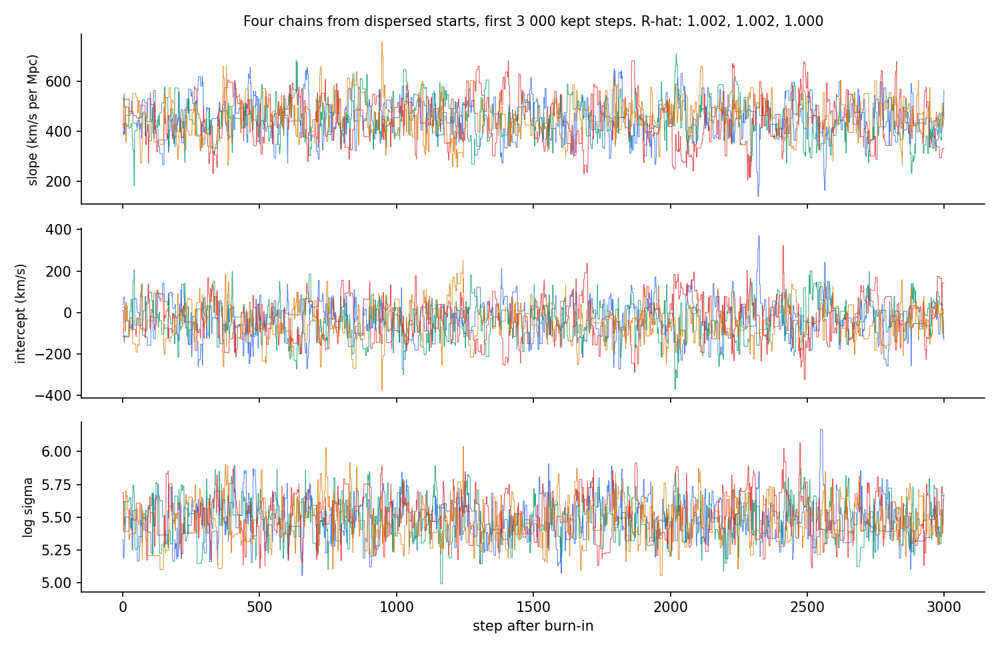
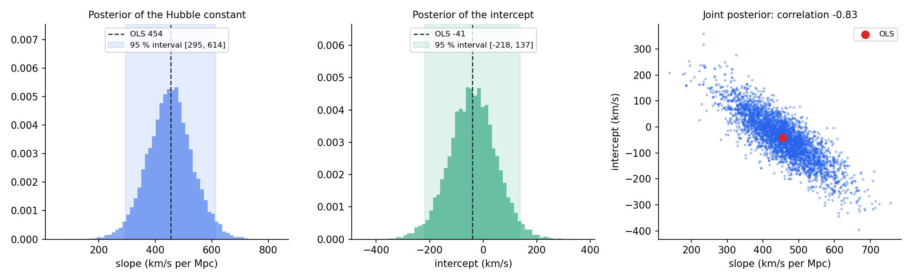
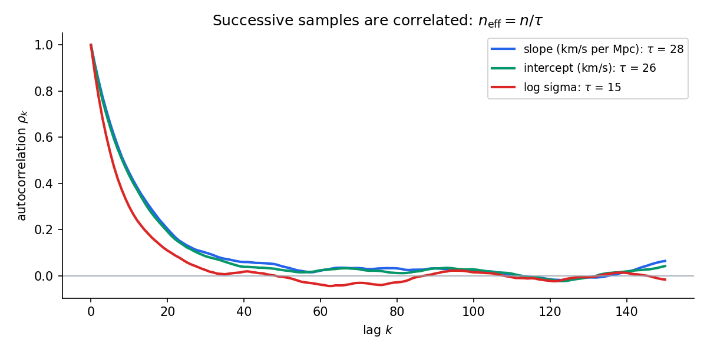
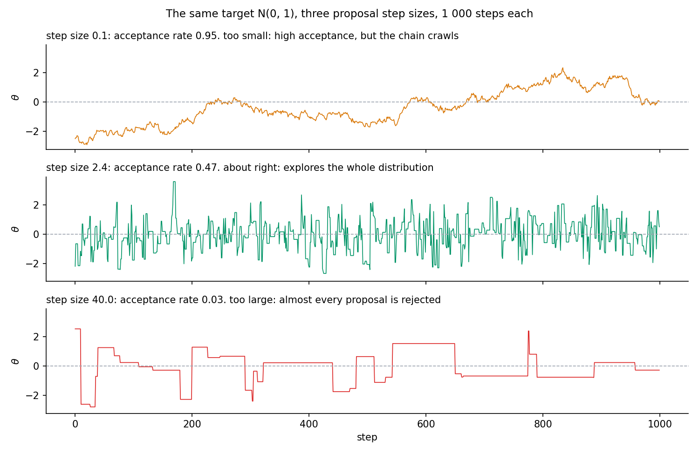

❓ Question
Bayes' theorem gives the posterior as likelihood times prior, divided by an integral that is usually impossible to compute. How can I draw samples from a distribution I can only evaluate up to a constant, and how do I know the samples are right?
✅ Answer
Build a random walk whose long-run distribution is the posterior. The Metropolis–Hastings rule does this with one line of algebra, and the reason it works (detailed balance) is a four-line proof. A 40-line sampler recovers a closed-form posterior to within its Monte Carlo error, and fitting Hubble's 1929 data gives the Hubble constant as 453 ± 80 km/s per Mpc, an uncertainty that ordinary least squares alone does not show.
1. The Idea in One Paragraph
A posterior distribution is proportional to , and both factors are easy to write down. The constant of proportionality is , which for anything beyond a textbook example has no closed form. Markov chain Monte Carlo sidesteps it: start anywhere, propose a random step, and accept it with a probability that depends only on the ratio , in which the constant cancels. Uphill steps are always taken. Downhill steps are taken sometimes, in proportion to how far down they go. The chain spends time in each region in proportion to its probability, so the visited points are samples from the posterior. The mathematics that guarantees this is a symmetry called detailed balance.

From the current point, an uphill proposal is always accepted. A downhill proposal is accepted with probability equal to the ratio of densities, here 0.34. Neither decision needs the normalising constant.
2. Two Worked Examples You Can Do by Hand
Run python worked_example.py to see every number below printed by the same code that fits the Hubble data.
2.1 Three States, Where the Chain is a Matrix
Target: three states with probabilities π = (0.2, 0.5, 0.3). Proposal: from any state, propose a neighbour with probability 1/2 each; at the two ends the move that would leave the state space becomes "stay". This keeps the proposal matrix symmetric:
The Metropolis acceptance probability for a proposed move i → j is αij = min(1, πj/πi):
α₀₁ = min(1, 0.5/0.2) = 1
α₁₀ = min(1, 0.2/0.5) = 0.4
α₁₂ = min(1, 0.3/0.5) = 0.6
α₂₁ = min(1, 0.5/0.3) = 1
The transition probability is Pij = Qij αij for i ≠ j, and each diagonal entry collects whatever was rejected:
P = [0.5 0.5 0; 0.2 0.5 0.3; 0 0.5 0.5]
Stationarity
Multiply π by P and verify that π P = π
Detailed Balance
The probability flow across each link is equal in both directions:
π₀ P₀₁ = 0.2 × 0.5 = 0.10 = 0.5 × 0.2 = π₁ P₁₀
π₁ P₁₂ = 0.5 × 0.3 = 0.15 = 0.3 × 0.5 = π₂ P₂₁

2.2 Three Metropolis Steps on a Coin
Seven heads in ten flips, prior Beta(2, 2). The unnormalised log posterior is log p(θ) = 8 log θ + 4 log(1 - θ). Start at θ = 0.5, propose θ' = θ + 0.1z with z ~ N(0,1), seed 0.
| Step | Current θ | Proposal θ' | log p(θ') - log p(θ) | α | Draw u | Decision |
|---|---|---|---|---|---|---|
| 1 | 0.5000 | 0.5126 | -8.2210 + 8.3178 = +0.0968 | 1.0000 | 0.2698 | accept, uphill |
| 2 | 0.5126 | 0.5766 | -7.8425 + 8.2210 = +0.3785 | 1.0000 | 0.0165 | accept, uphill |
| 3 | 0.5766 | 0.5230 | -8.1460 + 7.8425 = -0.3035 | e-0.3035 = 0.7382 | 0.9128 | reject, stay at 0.5766 |
Step 3 is the whole algorithm in one line: the proposal was downhill, it would have been accepted 74% of the time, and this time the coin came up against it.
3. The Derivations
3.1 Bayes' Theorem and the Unnormalised Posterior
For parameters θ and data D:
p(θ | D) = [p(D | θ) p(θ)] / p(D)
p(D) = ∫ p(D | θ') p(θ') dθ'
The denominator does not depend on θ. Writing p̃(θ) = p(D | θ) p(θ) for the numerator:
p(θ' | D) / p(θ | D) = p̃(θ') / p̃(θ)
Any algorithm that only ever looks at ratios of posterior densities never needs p(D). Metropolis–Hastings is such an algorithm.
3.2 Markov Chains, Stationarity, and Detailed Balance
A Markov chain on states i, j, ... is defined by transition probabilities Pij = Pr(next = j | now = i), with Σⱼ Pij = 1. A distribution π is stationary if running the chain one step from π leaves it unchanged:
πP = π
that is: Σᵢ πᵢ Pij = πⱼ for every j
The chain satisfies detailed balance with respect to π if:
πᵢ Pij = πⱼ Pji for every pair i, j
Theorem: Detailed balance implies stationarity.
Proof: Sum the detailed-balance identity over i:
Σᵢ πᵢ Pij = Σᵢ πⱼ Pji = πⱼ Σᵢ Pji = πⱼ · 1 = πⱼ ■
Detailed balance is the stronger, easier condition: it is a statement about each pair of states separately, and it is what the Metropolis rule is built to satisfy.
4. Verification
$ python -m pytest tests/ -q
29 passed in 14.56sSciPy appears only in the tests, as the reference. The sampler, the diagnostics, and the models are NumPy.
5. Results
5.1 The Coin Problem Against Its Closed Form
100,000 steps with step size 0.25, first 2,000 discarded. Acceptance rate 0.504, neff = 21,792.
| Quantity | MCMC | Exact Beta(9, 5) | Monte Carlo Standard Error |
|---|---|---|---|
| Mean | 0.6435 | 0.6429 | 0.0008 |
| Variance | 0.01522 | 0.01531 | |
| 5% Quantile | 0.4270 | 0.4274 | |
| Median | 0.6506 | 0.6498 | |
| 95% Quantile | 0.8322 | 0.8343 |

The difference in the mean is 0.0006, under one standard error. The histogram is the sampler; the curve is the theorem.
5.2 Hubble's 1929 Data
Edwin Hubble's original table: 24 nebulae, distance in megaparsecs and recession velocity in km/s (Hubble, PNAS 15(3):168–173, 1929). The slope of velocity against distance is the Hubble constant H₀.
Four chains, each 5,000 burn-in steps then 20,000 kept, from starting points scattered around the least-squares solution. Total time 1.2 s. Mean acceptance rate 0.236.
| Parameter | OLS | Posterior Mean | Posterior SD | 95% Interval | R̂ | neff (of 80,000) |
|---|---|---|---|---|---|---|
| H₀, km/s per Mpc | 454.2 | 452.7 | 80.3 | [294.5, 614.3] | 1.0023 | 2,927 |
| Intercept, km/s | -40.8 | -39.3 | 89.0 | [-217.8, 136.8] | 1.0024 | 3,077 |
| log σ | 5.48 | 0.15 | [5.2, 5.8] | 1.0003 | 4,974 | |
| σ, km/s | 232.9 | 241.9 | 37.8 | [182, 329] |

Four chains, four colours, first 3,000 kept steps. They are indistinguishable, which is what R̂ ≈ 1 says numerically.

Left and middle: marginal posteriors, with the OLS point estimate as a dashed line and the 95% interval shaded. Right: the joint posterior of slope and intercept, correlation -0.83.

Successive samples are correlated for about 30 steps. The integrated autocorrelation time is 28 for the slope, so 80,000 samples are worth about 2,900 independent ones.
6. Numerical Lessons Learned
Work in Log Space, Always
The log posterior at the least-squares point for the Hubble data is about -142, so the posterior density itself is around e-142 ≈ 10-62. That is still representable in double precision, but a data set ten times larger would give e-1400, which underflows. Logarithms turn products into sums and keep every number ordinary.
80,000 Samples Were Worth About 3,000
The integrated autocorrelation time for the slope was 28. A chain that looks long is not: the honest sample size is n / τ, and every reported uncertainty about a posterior mean has to use it. Skipping this step is the most common way to overstate the precision of an MCMC result.
The Step Size Has a Sweet Spot
A step of 0.1σ accepted 95% of proposals and went nowhere; a step of 40σ accepted 3% and stood still. The efficient middle is around 2.4σ in one dimension (acceptance near 0.44) and shrinks as 2.4/√d with dimension (acceptance near 0.23).

Additional Lessons
- Correlated Parameters: Slope and intercept have posterior correlation -0.83, creating a thin diagonal ellipse that slows isotropic random walks.
- Autocorrelation Windowing: Do not sum autocorrelation to the end; use Sokal's automatic window.
- Prior Parametrisation: A flat prior on log σ is not a flat prior on σ. Consider the Jacobian carefully.
- Burn-in: Chains started far from the answer require burn-in. Discarding the first few hundred steps was essential.
7. How to Run
pip install -r ../requirements.txt
python -m pytest tests/ -v # 29 tests, about 15 s
python worked_example.py # three-state chain and coin steps
python run.py # coin check + Hubble regression
python make_figures.py # conceptual diagramsSciPy is needed only for the tests.
8. Code Map
| File | Contents |
|---|---|
mcmc/metropolis.py |
metropolis_step and metropolis_hastings. Frozen Chain and StepResult dataclasses. |
mcmc/diagnostics.py |
autocorrelation, integrated_autocorrelation_time, effective_sample_size, gelman_rubin_rhat. |
mcmc/models.py |
Log densities: log_gaussian, log_beta_binomial_posterior, log_linear_regression_posterior. |
mcmc/discrete.py |
Metropolis on finite state space with detailed balance checks. |
data/hubble_1929.csv |
Hubble's 24 nebulae: distance (Mpc), velocity (km/s). |
tests/ |
29 tests, one theorem or closed form each. |
worked_example.py |
Section 2 examples, printed output. |
run.py |
Section 5: coin check and Hubble regression. |
make_figures.py |
Conceptual figures for sections 1, 2, and 6. |